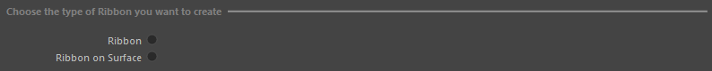
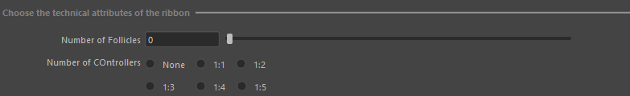
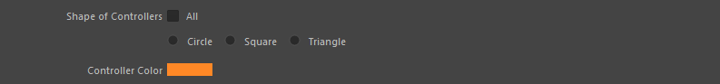
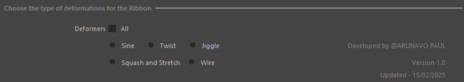
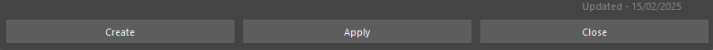
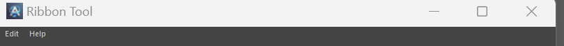

Ribbon Tool UI Documentation
This documentation provides a detailed explanation of the Ribbon Tool UI, guiding both beginners and advanced users on how to utilize its features for rigging in Maya.
1. Ribbon Type Selection

The UI offers two radio button options:
- Ribbon: Used when creating a ribbon for joint-based deformations, allowing for specific joint movements.
- Ribbon on Surface: Used for mesh deformations, such as facial expressions, fatty area jiggle, or localized deformations on the body.
When using Ribbon on Surface, the system relies on lo-fi curves, requiring an inner and outer curve selection.
2. Inner and Outer Curves
The inner and outer curves define the structure of the ribbon. The user must select polygon edges, which are then converted into NURBS curves.
3. Number of Follicles and Controllers

Number of Follicles: Defined by a slider and line edit, follicles control deformation influences.
Number of Controllers: Determines how many controllers will influence the ribbon.
4. Controller Shape and Color

Controller Shape: Choose from Circle, Square, or Triangle.
Controller Color: Allows setting a visual indicator for controllers.
5. Deformers

Sine: Adds sine wave deformation.
Twist: Enables twisting effects.
Jiggle: Useful for adding secondary motion.
Stretch and Squash: Useful for adding Stretching deformatoins
Wire: Enables adding drag motion.
6. Apply, Create, and Close Buttons

Apply: Saves and applies the current settings.
Create: Generates the Ribbon setup.
Close: Closes the tool.
7. Edit and Help Menu

The Edit Menu allows users to Save Settings for preserving UI preferences and Reset Settings to revert to saved defaults.
The Help Menu provides access to the developer's documentation.